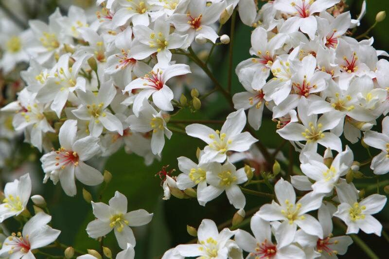

雲林古坑
Yunlin Gukeng
地址：雲林縣古坑鄉荷苞山
荷苞山海拔300公尺位於雲林縣古坑鄉，亞熱帶氣候型態與排水良好的沙質土壤，讓此處能種出品質很好的咖啡樹。
荷苞山從日據時代開始種植咖啡，品種為阿拉比卡．近年來在政府與民間的產銷推廣下，好喝的古坑咖啡知名度開始提高，巴登咖啡就是起源於此。荷苞山咖啡樹與油桐樹林立，這裡的桐花與咖啡一樣有名，山林間規劃了許多登山步道，咖啡樹與油桐樹有各自的產業小徑，踩著石階往上爬，林蔭森森的環境裡，空氣清新綠意盎然，4、5月到荷苞山賞桐花順便來上一杯最香醇的台灣產地咖啡，是花季裡最棒的享受！
桐花最密集的地方於全國童軍露營地與荷苞山登山步道。雲林縣賞桐花，除了荷苞山之外，西螺鄉、林內鄉、崙背鄉也都有賞桐的好景點。
更多介紹：